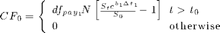
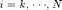
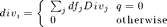
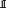
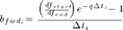
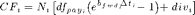
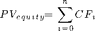

Equity Swap
Returns the present value of the equity leg of a total return equity swap. Dividends can either be a continous yield or discrete payments
Contents
function [p tbl]=EquitySwap(N,dfs,S,S0,q,divs,reset,payment,dt0,DCB1,DCB2)
Input Parameters
| N | Notional as the number of shares |
| S | Spot price at valuation date |
| S0 | Last reset before valuation date |
| q | Constant dividend yield |
| divs | n x 2 vector of dates and dividend amount (can be null) |
| reset | n x 2 pairs of rate start and end dates |
| payment | cash flow payments dates |
| dt0 | valuation date |
| DCB1,DCB2 | day count basis of reset and payment periods |
Output Parameters
| p | Present value of the equity swap leg |
| tbl | Table of detailed cashflows |
Filter Past Cashflows
range=(payment>=dt0);
payment=payment(range);
reset=reset(range,:);
deltaT1 = (reset(:,2) - reset(:,1)) / DCB1;
deltaT2 = (reset(:,2) - reset(:,1)) / DCB2;
k = 1;
cf = zeros(length(payment),1);
df = ones(length(payment),2);
df_p = ones(length(payment),1);
fwd = zeros(length(payment),1);
pr = zeros(length(payment),1);
Initial Cashflow for prior start

if dt0 > reset(1) dt1 = max((reset(1,2) - dt0) / DCB1, 0); dt2 = max((reset(1,2) - dt0) / DCB2, .25/DCB2); df(1,1) = 1; df(1,2) = Interpolate(dfs(:,2),dfs(:,1),reset(2),@LogLinear); df_p(1) = Interpolate(dfs(:,2),dfs(:,1),payment(1),@LogLinear); qr = exp(q*dt1); fwd(1) = (df(1,1) / df(1,2) / qr - 1) / dt2; pr(1) = S * exp(fwd(1) * dt1) / S0 - 1; cf(1) = N(1) * df_p(1) * pr(1); deltaT1(1) = dt1; k = 2; end
Iterate over cashflows

for i=k:length(payment);
Discrete dividends between reset periods


div = 0;
if q == 0
if ~isempty(divs)
div = sum(find(divs(:,1)>=reset(i)&&divs(:,1)<reset(i+1))) * dfs(:,i);
end
end
Calculate the forward cost of carry

df(i,1) = Interpolate(dfs(:,2),dfs(:,1),reset(i,1),@LogLinear);
df(i,2) = Interpolate(dfs(:,2),dfs(:,1),reset(i,2),@LogLinear);
qr = exp(q*deltaT2(i));
fwd(i) = (df(i,1) / df(i,2) / qr - 1) / deltaT2(i);
Cash Flow Generation

df_p(i) = Interpolate(dfs(:,2),dfs(:,1),payment(i),@LogLinear);
pr(i) = exp(fwd(i) * deltaT1(i)) - 1;
cf(i) = N(i) * df_p(i) * pr(i) + div;
end

p = sum(cf);
tbl = [reset payment df fwd pr deltaT1 df_p cf];
end